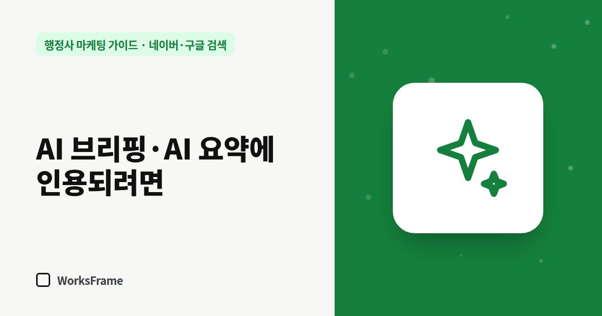

네이버·구글 검색
네이버 AI 브리핑·구글 AI 요약에 행정사 사무소 안내가 인용되려면
한 줄 답
질문을 제목으로 쓰고, 첫 문단에 바로 답하고, 목록·표로 정리하고, 기준 날짜와 출처를 밝힌 글이 네이버 AI 브리핑과 구글 AI 요약에 인용되기 쉽습니다.

이제 검색창에 질문을 넣으면 네이버는 AI 브리핑, 구글은 AI 요약(AI Overviews)으로 답을 먼저 보여 주는 경우가 많습니다. 사용자는 거기서 답을 얻고 떠나기도 합니다. Ahrefs 분석(2025년 12월 데이터)에서는 AI 요약이 나오는 검색어에서 1위 페이지의 클릭률이 약 58% 낮았습니다.
그렇다고 끝은 아닙니다. AI가 답을 만들 때 참고하고 출처로 연결하는 문서가 있고, 그 자리에 사무소 안내가 들어가면 “이 문제를 잘 아는 곳”으로 보입니다.
AI가 가져다 쓰기 좋은 글의 구조
- 질문을 제목으로 — “체류기간 연장, 언제부터 신청할 수 있나요?”
- 첫 문단에 바로 답 — 결론 한두 문장 먼저, 설명은 그다음
- 목록과 표 — 준비서류, 단계, 기간처럼 떼어 쓸 수 있는 형태
- 기준 날짜와 출처 — “2026년 9월 기준”, 관계 기관 안내 링크
- 누가 썼는지 — 사무소명, 행정사 이름, 연락 방법
인용이 문의로 이어지게
AI 요약만 보고 떠나는 사람도 있지만, 복잡한 업무일수록 “내 경우는?”이라는 질문이 남습니다. 글 곳곳에 다음을 넣어 두세요.
- “개인 상황에 따라 달라지는 부분” 명시 — 예외 사례 몇 가지
- 상담으로 확인할 수 있는 것 — “서류 검토 후 가능 여부를 알려 드립니다”
- 연락 방법이 보이는 위치
기술적으로 챙길 것
- 검색엔진에 수집되게 — 서치어드바이저·서치 콘솔 등록 (네이버, 구글)
- 페이지마다 고유한 제목과 설명
- 자주 묻는 질문을 검색엔진이 읽는 형식(구조화 데이터)으로 표시해 두면, 질문과 답이 어디서 시작하고 끝나는지 AI가 알아보기 쉽습니다
- 사무소 정보(이름·주소·전화)를 모든 곳에서 똑같이
하지 말아야 할 것
- AI가 좋아할 것 같다고 비슷한 글을 대량으로 찍어내기 (왜 위험한지)
- 확인되지 않은 수치나 단정적인 결론
자주 묻는 질문
AI 브리핑에 나오게 하는 방법이 따로 있나요?
정해진 신청 방법은 없습니다. 질문에 정확하고 구조적으로 답하는 글, 신뢰할 수 있는 출처가 유리하다는 것이 공통된 원칙입니다.
블로그 글도 AI 브리핑에 나오나요?
네이버 AI 브리핑은 블로그를 포함한 여러 문서를 참고합니다. 홈페이지와 블로그 모두 같은 원칙으로 쓰면 됩니다.